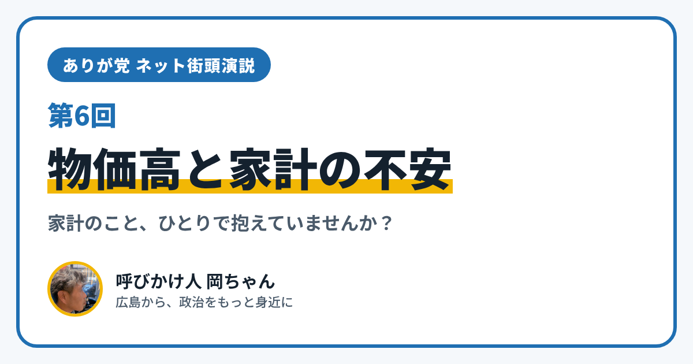

ありが党 ネット街頭演説 第6回｜物価高と家計の不安

こんにちは、ありが党の呼びかけ人、岡ちゃんです。今日のネット街頭演説のテーマは「物価高と家計の不安」です。
スーパーで、同じものを買っているのに、前より支払いが増えたと感じたこと、ありませんか？ 月末になると財布の中が心配で、「このままで大丈夫かな」と、ひとりで不安になっていませんか？
お金の悩みは、人に話しにくいものです。でも、ひとりで抱えこまずに相談できる場所があります。今日は、広島市のしくみを2つ紹介します。
各区にある「広島市くらしサポートセンター」
1つめは「広島市くらしサポートセンター」です。生活に困っている人のための相談窓口で、「生活困窮者自立支援制度」という国の制度にもとづいて置かれています。
- 広島市の8つの区に、1か所ずつあります。住んでいる区のセンターに相談します
- 仕事のこと、住まいのこと、家計のことなどを、まとめて相談できます
- 生活保護を受けるほどではないけれど、暮らしが苦しい、という人のための窓口です
電話番号や場所は、広島市のホームページの「広島市くらしサポートセンター」のページにのっています。
家計を一緒に見直す「家計改善支援」
2つめは「家計改善支援」です。広島市の生活困窮者自立支援制度の中にあるしくみで、家計の状況を一緒に「見える化」して、根本の課題を見つけていきます。必要に応じて、法テラスなどの相談先につないだり、お金を借りられる制度を紹介したりもしてくれます。
家計簿をつけるのが苦手でも、ひとりで数字とにらめっこしなくていい。そんな支えがあることを、僕はもっと多くの人に知ってほしいと思っています。
僕が大事にしたいこと
僕は、お金の心配は、心の元気や人とのつながりにも影響すると思っています。困ったときに「助けて」と言えて、その声がちゃんと届く広島であってほしいと思っています。そのためにどんなしくみがあったらいいか、みんなで考えたいです。
あなたは、物価が上がって、どんなことに困っていますか？ 食費、光熱費、日用品、通院や移動のお金。小さなことでも大丈夫です。InstagramのDM（@ayu19841002）や、ありが党のページから、あなたの暮らしの声を聞かせてください。
ありが党は、まだ僕ひとりから始めたばかりです。政治をもっと身近にしたいと思う方、一緒に考えてくれる仲間を探しています。InstagramのDM（@ayu19841002）で気軽に声をかけてください。